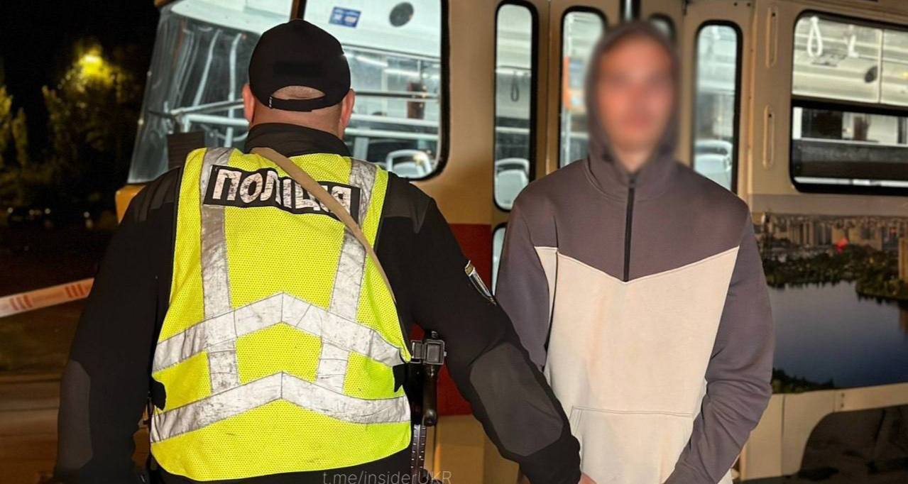

Топор Live
@toporlive
Топор Live
@toporlive
В Киеве пьяный слесарь угнал трамвай и отправился кататься по столице полиция Украины.

⚡️В Киеве пьяный слесарь угнал трамвай и отправился кататься по столице, — полиция Украины.
20-летний парень проник в кабину, запустил трамвай и поехал по маршруту. Чтобы его остановить, работникам пришлось обесточить контактную сеть.
Задержанный пояснил сотрудникам полиции, что совершил этот поступок из-за своей любви к поездкам на трамваях.
👉 Топор Live. Подписаться
20-летний парень проник в кабину, запустил трамвай и поехал по маршруту. Чтобы его остановить, работникам пришлось обесточить контактную сеть.
Задержанный пояснил сотрудникам полиции, что совершил этот поступок из-за своей любви к поездкам на трамваях.
👉 Топор Live. Подписаться